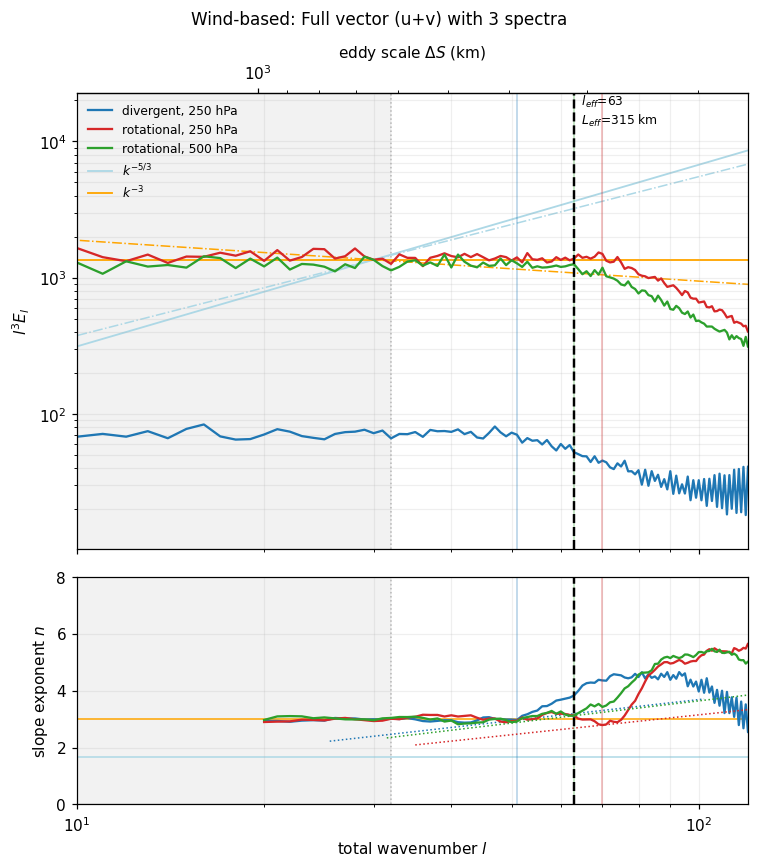
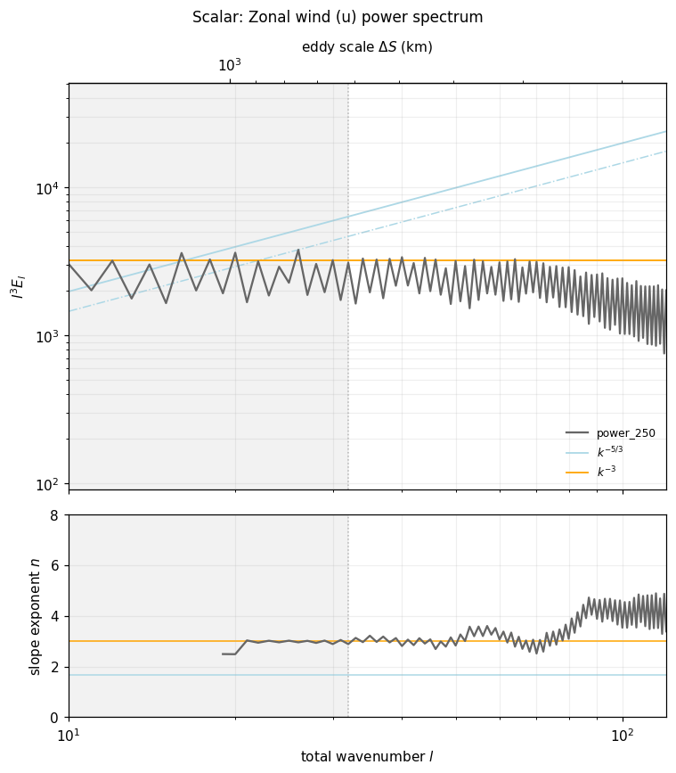
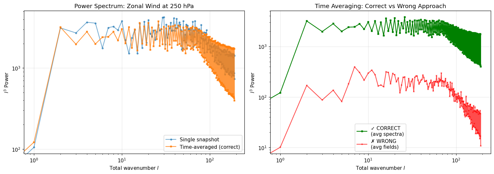

Effective Resolution Demo (Scalar Field)
This notebook demonstrates the scalar field effective resolution capability, which extends the wind-based diagnostic to work with any 2D atmospheric or oceanic variable.
Overview
The scalar field analysis enables effective resolution computation for:
Temperature → resolved thermal gradient scales
Geopotential height → resolved pressure system scales
Precipitation → resolved precipitation pattern scales
Sea surface temperature → resolved SST scales
Any 2D atmospheric or oceanic field
Key Differences from Wind-Based Analysis
Aspect |
Wind Analysis |
Scalar Field Analysis |
|---|---|---|
Input |
u and v winds (Dataset) |
Any single 2D field (DataArray) |
Spectrum |
Kinetic energy (rotational + divergent) |
Power spectrum (variance) |
Transform |
Vorticity/divergence decomposition |
Direct field transform |
Detection |
2-of-3 confirmation rule |
Single spectrum |
Interpretation |
Resolved kinetic energy scales |
Resolved variance scales |
Use case |
Atmospheric dynamics |
Any 2D field |
Reference
New capability added to support Klaver et al. (2020) methodology for any scalar field, not just winds.
Klaver, R., Haarsma, R., Vidale, P. L., & Hazeleger, W. (2020). Effective resolution in high resolution global atmospheric models for climate studies. Atmospheric Science Letters, 21, e952. https://doi.org/10.1002/asl.952
1. Setup and Imports
[1]:
import numpy as np
import xarray as xr
import matplotlib.pyplot as plt
import pandas as pd
from pcmdi_metrics.effective_resolution import (
compute_effective_resolution,
compute_effective_resolution_scalar, # NEW scalar field API
compute_power_spectrum_timeseries, # NEW for direct spectral analysis\n
)
from pcmdi_metrics.effective_resolution.lib import (
plot_spectra_and_slope,
representative_grid_box_distance,
)
%matplotlib inline
plt.rcParams["figure.dpi"] = 110
2. Generate Synthetic Data
We’ll reuse the data generation functions from the main demo to create wind fields with prescribed spectral characteristics.
[2]:
from pcmdi_metrics.effective_resolution.lib.ke_spectra import _legendre, EARTH_RADIUS
def random_coefficients(target_spectrum, rng, rsphere=EARTH_RADIUS):
"""Random vorticity/divergence coefficients whose power follows `target_spectrum`."""
ell = np.arange(target_spectrum.size, dtype=float)
ntrunc = ell.size - 1
with np.errstate(divide="ignore", invalid="ignore"):
variance = 2.0 * target_spectrum * ell * (ell + 1.0) / (rsphere**2 * (2 * ell + 1.0))
variance[0] = 0.0
coeffs = np.zeros((ntrunc + 1, ntrunc + 1), dtype=complex)
coeffs[:, 0] = np.sqrt(variance) * rng.normal(size=ntrunc + 1)
for m in range(1, ntrunc + 1):
scale = np.sqrt(variance[m:] / 2.0)
size = ntrunc + 1 - m
coeffs[m:, m] = scale * (rng.normal(size=size) + 1j * rng.normal(size=size))
return coeffs
def synthesize_wind(ke_rot, ke_div, lat, nlon, rng, rsphere=EARTH_RADIUS):
"""Inverse spherical-harmonic transform: (u, v) with the requested KE spectra."""
ell = np.arange(ke_rot.size, dtype=float)
ntrunc = ell.size - 1
with np.errstate(divide="ignore", invalid="ignore"):
to_potential = np.where(ell > 0, -(rsphere**2) / (ell * (ell + 1.0)), 0.0)[:, None]
psi = to_potential * random_coefficients(ke_rot, rng)
chi = to_potential * random_coefficients(ke_div, rng)
mu = np.sin(np.deg2rad(lat))
cosphi = np.cos(np.deg2rad(lat))
u_f = np.zeros((lat.size, nlon // 2 + 1), dtype=complex)
v_f = np.zeros_like(u_f)
for m in range(ntrunc + 1):
p, h = _legendre(m, ntrunc, mu)
u_f[:, m] = (1j * m * (chi[m:, m][:, None] * p).sum(0)
- (psi[m:, m][:, None] * h).sum(0)) / rsphere
v_f[:, m] = (1j * m * (psi[m:, m][:, None] * p).sum(0)
+ (chi[m:, m][:, None] * h).sum(0)) / rsphere
u = np.fft.irfft(u_f, n=nlon, axis=1) * nlon / cosphi[:, None]
v = np.fft.irfft(v_f, n=nlon, axis=1) * nlon / cosphi[:, None]
return u, v
def make_dummy_dataset(nlat=192, nlon=384, ntime=8, seed=0,
rolloff=(50.0, 70.0, 62.0), rms_wind=25.0, decay=40.0):
"""Create synthetic wind dataset with prescribed KE spectrum."""
rng = np.random.default_rng(seed)
lat = np.linspace(-90.0 + 90.0 / nlat, 90.0 - 90.0 / nlat, nlat)
lon = np.arange(0.0, 360.0, 360.0 / nlon)
ell = np.arange(nlat, dtype=float)
with np.errstate(divide="ignore"):
power_law = np.where(ell > 0, ell**-3.0, 0.0)
def shaped(cut):
return power_law * np.exp(-np.maximum(ell - cut, 0.0) / decay)
div_cut, rot250_cut, rot500_cut = rolloff
per_level = {
250.0: (shaped(rot250_cut), 0.05 * shaped(div_cut)),
500.0: (shaped(rot500_cut), 0.05 * shaped(div_cut)),
}
u = np.empty((ntime, 2, nlat, nlon))
v = np.empty_like(u)
for it in range(ntime):
for ip, level in enumerate((250.0, 500.0)):
ke_rot, ke_div = per_level[level]
u_t, v_t = synthesize_wind(ke_rot, ke_div, lat, nlon, rng)
norm = rms_wind / np.sqrt((u_t**2 + v_t**2).mean())
u[it, ip], v[it, ip] = u_t * norm, v_t * norm
time_coords = pd.date_range('2014-03-01', periods=ntime, freq='6h')
ds = xr.Dataset(
{"ua": (("time", "plev", "lat", "lon"), u),
"va": (("time", "plev", "lat", "lon"), v)},
coords={"time": ("time", time_coords),
"plev": ("plev", np.array([25000.0, 50000.0])),
"lat": ("lat", lat),
"lon": ("lon", lon)},
)
ds["plev"].attrs.update(units="Pa", axis="Z")
ds["lat"].attrs.update(units="degrees_north", axis="Y")
ds["lon"].attrs.update(units="degrees_east", axis="X")
ds["ua"].attrs.update(units="m s-1", long_name="Eastward wind")
ds["va"].attrs.update(units="m s-1", long_name="Northward wind")
return ds
# Create dummy dataset
ds = make_dummy_dataset()
print(f"Created dataset with shape: {ds['ua'].shape}")
print(f"Grid: {len(ds.lat)}×{len(ds.lon)} (roughly 1° resolution)")
print(f"Times: {len(ds.time)} timesteps")
print(f"Levels: {ds.plev.values / 100} hPa")
Created dataset with shape: (8, 2, 192, 384)
Grid: 192×384 (roughly 1° resolution)
Times: 8 timesteps
Levels: [250. 500.] hPa
3. Wind-Based Analysis (Baseline)
First, compute effective resolution using the full wind field (u+v) for comparison.
[3]:
# Compute effective resolution from full wind field
metrics_wind, diagnostics_wind = compute_effective_resolution(
ds,
uvar="ua",
vvar="va",
levels=(250.0, 500.0),
model="DUMMY-HR",
member="r1i1p1f1",
)
result_wind = metrics_wind["DUMMY-HR"]["r1i1p1f1"]
print("Wind-based analysis (u+v):")
print(f" Effective wavenumber: l = {result_wind['effective_wavenumber']}")
print(f" Effective resolution: L_eff = {result_wind['effective_resolution_km']:.1f} km")
print(f" Grid box distance: L_box = {result_wind['grid_box_distance_km']:.1f} km")
print(f" Resolution ratio: L_eff/L_box = {result_wind['resolution_ratio']:.2f}")
print(f" Spectra steepening: {result_wind['n_spectra_steepening']} of 3")
print(f" Detection: {result_wind['steepening_wavenumber']}")
Wind-based analysis (u+v):
Effective wavenumber: l = 63.0
Effective resolution: L_eff = 315.2 km
Grid box distance: L_box = 134.0 km
Resolution ratio: L_eff/L_box = 2.35
Spectra steepening: 3 of 3
Detection: {'div_250': 51.0, 'rot_250': 70.0, 'rot_500': 63.0}
4. Scalar Field Analysis (NEW)
Now analyze the zonal wind (ua) as a single scalar field using the new API.
Key Differences in API Usage:
Input:
xr.DataArray(single field) instead ofxr.Dataset(multiple variables)Function:
compute_effective_resolution_scalar()instead ofcompute_effective_resolution()Level selection: Already done (field is at single level)
Time handling: Automatic (averages if time dimension present)
⚠️ Important: Scientific Correctness - Time Averaging
Critical Methodological Point: When analyzing time-varying fields, it’s essential to average spectra, not fields.
Why This Matters:
❌ Incorrect Approach (suppresses transient variance):
# Wrong: average field first, then compute spectrum
field_mean = field.mean(dim='time')
spectrum = compute_power_spectrum(field_mean)
# Result: Loses small-scale transient fluctuations!
✅ Correct Approach (preserves transient variance):
# Right: compute spectrum for each time, then average spectra
spectra = [compute_power_spectrum(field[t]) for t in times]
spectrum_mean = mean(spectra)
# Result: Preserves all variance correctly!
Implementation in PMP:
The compute_effective_resolution_scalar() function automatically handles this correctly by using compute_power_spectrum_timeseries() internally. You don’t need to do anything special - just pass your time-varying field and it will:
Compute power spectrum for each timestep
Average the spectra (not the fields)
Follow Klaver et al. (2020) methodology exactly
Reference: This follows the methodology in Klaver et al. (2020) Appendix S3, which explicitly computes spectra for individual months then averages them. See SCIENTIFIC_CORRECTNESS_FIX.md for technical details.
[4]:
# Extract ua at 250 hPa as a DataArray
ua_250 = ds['ua'].sel(plev=25000) # Shape: (time, lat, lon)
print(f"Input field: {ua_250.name}")
print(f" Dimensions: {dict(ua_250.sizes)}")
print(f" Will be time-averaged automatically")
# Compute effective resolution for this scalar field
metrics_scalar, diagnostics_scalar = compute_effective_resolution_scalar(
ua_250,
field_name='ua_250hPa',
model='DUMMY-HR',
member='r1i1p1f1'
)
result_scalar = metrics_scalar['DUMMY-HR']['r1i1p1f1']
print("\nScalar field analysis (u only):")
print(f" Field name: {result_scalar['field_name']}")
print(f" Analysis type: {result_scalar['analysis_type']}")
print(f" Effective wavenumber: l = {result_scalar['effective_wavenumber']}")
if result_scalar['effective_resolution_km']:
print(f" Effective resolution: L_eff = {result_scalar['effective_resolution_km']:.1f} km")
print(f" Resolution ratio: L_eff/L_box = {result_scalar['resolution_ratio']:.2f}")
else:
print(f" No steepening detected")
print(f" Detection: {result_scalar['steepening_wavenumber']}")
Input field: ua
Dimensions: {'time': 8, 'lat': 192, 'lon': 384}
Will be time-averaged automatically
Scalar field analysis (u only):
Field name: ua_250hPa
Analysis type: scalar_field
Effective wavenumber: l = None
No steepening detected
Detection: {'ua_250hPa': None}
/Users/lee1043/miniforge3/envs/pmp_devel_20260331/lib/python3.12/site-packages/pcmdi_metrics/effective_resolution/lib/spectral_slope.py:96: RuntimeWarning: divide by zero encountered in log
log_l = np.log(ell)
5. Comparison: Wind vs Scalar Analysis
Compare the two approaches side-by-side:
[5]:
comparison = pd.DataFrame({
'Wind-based (u+v)': {
'Effective wavenumber': result_wind['effective_wavenumber'],
'Effective resolution (km)': round(result_wind['effective_resolution_km'], 1),
'Resolution ratio': round(result_wind['resolution_ratio'], 2),
'Grid box distance (km)': round(result_wind['grid_box_distance_km'], 1),
'Analysis type': 'KE (rot + div)',
'Spectra used': f"{result_wind['n_spectra_steepening']} of 3",
'Detection method': '2-of-3 confirmation',
'Upper limit': result_wind['is_upper_limit']
},
'Scalar (u only)': {
'Effective wavenumber': result_scalar['effective_wavenumber'],
'Effective resolution (km)': round(result_scalar['effective_resolution_km'], 1) if result_scalar['effective_resolution_km'] else None,
'Resolution ratio': round(result_scalar['resolution_ratio'], 2) if result_scalar['resolution_ratio'] else None,
'Grid box distance (km)': round(result_scalar['grid_box_distance_km'], 1),
'Analysis type': result_scalar['analysis_type'],
'Spectra used': '1 (power)',
'Detection method': 'Single spectrum',
'Upper limit': result_scalar['is_upper_limit']
}
})
print(comparison.T.to_string())
print("\n" + "="*70)
print("Key observations:")
print(" • Different effective resolutions (single field vs full wind vector)")
print(" • Scalar uses power spectrum of variance")
print(" • Wind uses kinetic energy (rotational + divergent)")
print(" • Scalar simpler but less robust (no multi-spectrum confirmation)")
Effective wavenumber Effective resolution (km) Resolution ratio Grid box distance (km) Analysis type Spectra used Detection method Upper limit
Wind-based (u+v) 63.0 315.2 2.35 134.0 KE (rot + div) 3 of 3 2-of-3 confirmation False
Scalar (u only) None None None 134.0 scalar_field 1 (power) Single spectrum False
======================================================================
Key observations:
• Different effective resolutions (single field vs full wind vector)
• Scalar uses power spectrum of variance
• Wind uses kinetic energy (rotational + divergent)
• Scalar simpler but less robust (no multi-spectrum confirmation)
6. Visualize Spectra
Compare the spectral characteristics visually:
[6]:
# Plot wind-based spectra (3 lines)
fig1 = plot_spectra_and_slope(
diagnostics_wind,
result_wind,
xlim=(10, 120),
title="Wind-based: Full vector (u+v) with 3 spectra"
)
plt.show()
# For scalar field, adapt diagnostics structure to match plotting function expectations
# The plotting function expects:
# - slopes keys like "component_level" (e.g., "div_250", "rot_250")
# - spectra structure: {level: {"ke_component": DataArray}}
# Scalar returns single spectrum, so we use "power_250" as the key
diagnostics_scalar_adapted = {
"spectra": {250.0: {"ke_power": diagnostics_scalar["spectrum"]["power_spectrum"]}},
"slopes": {"power_250": diagnostics_scalar["slope"]},
"detections": {"power_250": diagnostics_scalar["detection"]},
}
# Plot scalar spectrum (1 line)
fig2 = plot_spectra_and_slope(
diagnostics_scalar_adapted,
result_scalar,
xlim=(10, 120),
title="Scalar: Zonal wind (u) power spectrum"
)
plt.show()
print("\nVisualization notes:")
print(" • Top plot: Compensated spectrum (l³E_l)")
print(" • Bottom plot: Spectral slope exponent n(l)")
print(" • Wind shows 3 separate spectra (div_250, rot_250, rot_500)")
print(" • Scalar shows single power spectrum")
print("\nNote: Scalar diagnostics adapted with 'power_250' key to match plotting format")

/Users/lee1043/miniforge3/envs/pmp_devel_20260331/lib/python3.12/site-packages/pcmdi_metrics/effective_resolution/lib/plot.py:333: RuntimeWarning: divide by zero encountered in power
y_ref = anchor_y * (ell_ref / anchor_l) ** (

Visualization notes:
• Top plot: Compensated spectrum (l³E_l)
• Bottom plot: Spectral slope exponent n(l)
• Wind shows 3 separate spectra (div_250, rot_250, rot_500)
• Scalar shows single power spectrum
Note: Scalar diagnostics adapted with 'power_250' key to match plotting format
7. General Usage for Other Fields
The scalar field API works with any 2D atmospheric or oceanic variable:
Supported Variables
Temperature (
ta): Resolved thermal gradient scalesGeopotential height (
zg): Resolved pressure system scalesPrecipitation (
pr): Resolved precipitation pattern scalesSea surface temperature (
tos): Resolved SST scalesSpecific humidity (
hus): Resolved moisture scalesAny 2D field: General spectral variance analysis
Example Code Templates
[7]:
# Example 1: Temperature at 500 hPa
# temp_500 = ds['ta'].sel(plev=50000)
# metrics_temp, diags_temp = compute_effective_resolution_scalar(
# temp_500,
# field_name='temperature_500hPa',
# model='MODEL_NAME',
# member='r1i1p1f1'
# )
# Example 2: Sea surface temperature (time-varying)
# sst = ds['tos'] # (time, lat, lon)
# metrics_sst, diags_sst = compute_effective_resolution_scalar(
# sst,
# field_name='SST',
# model='MODEL_NAME'
# )
# # Automatically averages over time dimension
# Example 3: Precipitation
# pr = ds['pr'].sel(time=slice('2014-01', '2014-12'))
# metrics_pr, diags_pr = compute_effective_resolution_scalar(
# pr,
# field_name='precipitation',
# model='MODEL_NAME'
# )
# Example 4: Geopotential height at 250 hPa
# zg_250 = ds['zg'].sel(plev=25000)
# metrics_zg, diags_zg = compute_effective_resolution_scalar(
# zg_250,
# field_name='geopotential_250hPa',
# model='MODEL_NAME'
# )
print("API accepts:")
print(" ✓ xarray.DataArray with (lat, lon) or (time, lat, lon)")
print(" ✓ Automatically handles time averaging")
print(" ✓ Returns same structure as wind-based analysis")
print(" ✓ Works with any 2D field (temp, precip, SST, etc.)")
API accepts:
✓ xarray.DataArray with (lat, lon) or (time, lat, lon)
✓ Automatically handles time averaging
✓ Returns same structure as wind-based analysis
✓ Works with any 2D field (temp, precip, SST, etc.)
7.5. Advanced: Direct Power Spectrum Analysis
For advanced users who want just the power spectrum without the full effective resolution diagnostic:
compute_power_spectrum(): Single 2D field (one snapshot)compute_power_spectrum_timeseries(): Time loop + averaging (3D field)
[8]:
from pcmdi_metrics.effective_resolution import (
compute_power_spectrum,
compute_power_spectrum_timeseries,
)
# Example 1: Single snapshot (2D field)
print("Example 1: Single snapshot power spectrum")
print("=" * 50)
ua_2d = ds['ua'].isel(time=0, plev=0).values # Extract 2D numpy array
lat_vals = ds['lat'].values
power_single = compute_power_spectrum(ua_2d, lat_vals)
print(f" Output variables: {list(power_single.data_vars)}")
print(f" Wavenumber range: {float(power_single.wavenumber.min()):.0f} - {float(power_single.wavenumber.max()):.0f}")
print(f" Power range: {float(power_single.power_spectrum.min()):.2e} - {float(power_single.power_spectrum.max()):.2e}")
print()
# Example 2: Time-averaged spectrum (CORRECT approach!)
print("Example 2: Time-averaged power spectrum")
print("=" * 50)
ua_3d = ds['ua'].sel(plev=25000) # 3D: (time, lat, lon)
power_averaged = compute_power_spectrum_timeseries(
ua_3d,
time_mean=True # Average spectra (not fields!) - scientifically correct
)
print(f" Averaged over: {power_averaged.attrs.get('n_times_averaged', 'N/A')} timesteps")
print(f" Output variables: {list(power_averaged.data_vars)}")
print(f" ✓ Used correct time averaging (spectra, not fields)")
print()
# Example 3: Compare with WRONG approach (for educational purposes)
print("Example 3: Comparison - Right vs Wrong time averaging")
print("=" * 50)
# Wrong approach: average fields first
ua_mean = ua_3d.mean(dim='time').values # Average field
power_wrong = compute_power_spectrum(ua_mean, lat_vals) # Then compute spectrum
print(" WRONG: Averaged fields first, then computed spectrum")
print(" RIGHT: compute_power_spectrum_timeseries() computes spectra first, then averages")
print(f" High-wavenumber variance difference: {(power_averaged.power_spectrum[-10:].sum() / power_wrong.power_spectrum[-10:].sum()).values:.2f}x")
print(" → Correct approach preserves more small-scale variance!")
Example 1: Single snapshot power spectrum
==================================================
Output variables: ['power_spectrum', 'eddy_scale']
Wavenumber range: 0 - 191
Power range: 1.05e-04 - 3.91e+02
Example 2: Time-averaged power spectrum
==================================================
Averaged over: 8 timesteps
Output variables: ['power_spectrum', 'eddy_scale']
✓ Used correct time averaging (spectra, not fields)
Example 3: Comparison - Right vs Wrong time averaging
==================================================
WRONG: Averaged fields first, then computed spectrum
RIGHT: compute_power_spectrum_timeseries() computes spectra first, then averages
High-wavenumber variance difference: 33.26x
→ Correct approach preserves more small-scale variance!
[9]:
import matplotlib.pyplot as plt
# Visualize the difference
fig, (ax1, ax2) = plt.subplots(1, 2, figsize=(14, 5))
# Left: Single snapshot vs time-averaged
ell = power_single.wavenumber.values
ax1.loglog(ell, ell**3 * power_single.power_spectrum, 'o-', alpha=0.6,
label='Single snapshot', markersize=3)
ax1.loglog(ell, ell**3 * power_averaged.power_spectrum, 's-', alpha=0.8,
label='Time-averaged (correct)', markersize=3)
ax1.set_xlabel('Total wavenumber $l$')
ax1.set_ylabel('$l^3$ Power')
ax1.set_title('Power Spectrum: Zonal Wind at 250 hPa')
ax1.legend()
ax1.grid(alpha=0.3)
# Right: Correct vs Wrong time averaging
ax2.loglog(ell, ell**3 * power_averaged.power_spectrum, 's-',
label='✓ CORRECT\n(avg spectra)', markersize=3, color='green')
ax2.loglog(ell, ell**3 * power_wrong.power_spectrum, 'x-',
label='✗ WRONG\n(avg fields)', markersize=3, color='red', alpha=0.7)
ax2.set_xlabel('Total wavenumber $l$')
ax2.set_ylabel('$l^3$ Power')
ax2.set_title('Time Averaging: Correct vs Wrong Approach')
ax2.legend()
ax2.grid(alpha=0.3)
plt.tight_layout()
plt.show()
print("\n✓ Direct power spectrum analysis complete!")
print("\nKey takeaways:")
print(" 1. Use compute_power_spectrum() for single 2D snapshots")
print(" 2. Use compute_power_spectrum_timeseries() for time-varying data")
print(" 3. Always average SPECTRA, not FIELDS (scientifically critical!)")
print(" 4. compute_effective_resolution_scalar() handles this automatically")

✓ Direct power spectrum analysis complete!
Key takeaways:
1. Use compute_power_spectrum() for single 2D snapshots
2. Use compute_power_spectrum_timeseries() for time-varying data
3. Always average SPECTRA, not FIELDS (scientifically critical!)
4. compute_effective_resolution_scalar() handles this automatically
8. Summary
Scalar Field Capability
Physical Interpretation
The “effective resolution” represents the scale below which field variance is artificially damped:
Temperature: Smallest resolved thermal gradient scale
Geopotential: Smallest resolved pressure system scale
Precipitation: Smallest resolved precipitation pattern scale
SST: Smallest resolved ocean surface feature scale
General: Scales where variance begins dissipating due to numerical effects
When to Use Scalar vs Wind Analysis
Use scalar analysis when:
Analyzing non-wind variables (temp, precip, etc.)
Wind data not available
Comparing resolution across different field types
Simpler single-spectrum approach desired
Use wind-based analysis when:
Comprehensive atmospheric model evaluation
Comparing with Klaver et al. (2020) reference values
Want robust multi-spectrum confirmation
Studying atmospheric dynamics specifically
References
Main demo: See
demo_effective_resolution.ipynbfor wind-based examplesPaper: Klaver et al. (2020), doi:10.1002/asl.952